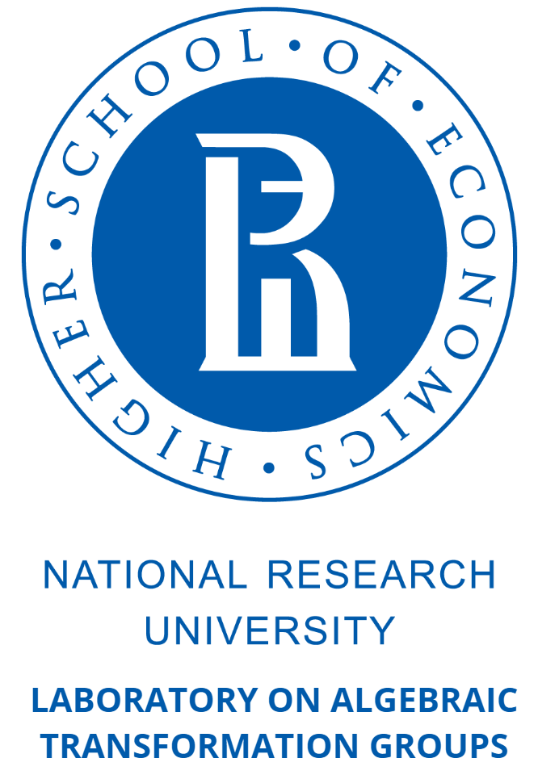

|  |
27 января - 1 февраля 2020 г., Москва
18 - 26 августа 2018 г., Самара
30 января - 4 февраля 2017 г., Москва
22 июня - 27 июня 2015 г., Самара
27 января - 1 февраля 2014 г., Москва
24 июня - 1 июля 2012 г., Тольятти
31 января – 5 февраля 2011 г., Москва
8 июня - 15 июня 2009 г., Самара
Математический институт им. В.А. Стеклова РАН,
Центр фундаментальной и прикладной математики МГУ,
Лаборатория алгебраических групп преобразований НИУ ВШЭ
Зарегистрированные участники
| 1 | YbEriv YbEriv YbEriv | Moscow | YbEriv |
| 2 | Yusupov Bakhtiyor Bakhrambek o'g'li | Uzbekistan | V.I.Romanovskiy Institute of Mathematics of Uzbekistan Academy of Sciences, Tashkent, Uzbekistan. |
| 3 | Адашев Жобир Адашев | Ташкент | Институт математики В.И.Романовского |
| 4 | Акилова Сабина Жахоновна | Санкт-Петербург | СПбГУ |
| 5 | Алиев Ягуб Наджаф | Баку | Университет АДА |
| 6 | Аржанцев Иван Владимирович | Москва | НИУ Высшая Школа Экономики |
| 7 | Артамонов Дмитрий Вячеславович | Москва | МГУ имени М.В. Ломоносова |
| 8 | Ахмедова Евгения | Москва | ВШЭ |
| 9 | Бережной Андрей Дмитриевич | Москва | МГУ имени М.В. Ломоносова |
| 10 | Боровик Виктория | Москва | МГУ, НИУ ВШЭ |
| 11 | Буздалова Оксана Александровна | Самара | Самарский университет |
| 12 | Бунтова Яна Сергеевна | Самара | Самарский Университет |
| 13 | Варгулевич Ангелина Михайловна | Москва | ВШЭ |
| 14 | Венчаков Михаил Сергеевич | Самара | Самарский университет |
| 15 | Викулова Анастасия Вадимовна | Москва | факультет математики ВШЭ |
| 16 | Вифлянцев Виктор Павлович | Таганрог | РАН Юж.отд. г.Ростов н,д |
| 17 | Воскресенская Галина | Самара | Самарский университет |
| 18 | Выплачено AAAhalgebra.math.msu.suBBB Выплачено AAAhalgebra.math.msu.suBBB Выплачено AAAhalgebra.math.msu.suBBB | Выплачено AAAhalgebra.math.msu.suBBB | Выплачено AAAhalgebra.math.msu.suBBB |
| 19 | Гайфуллин Сергей Александрович | Москва | МГУ, ВШЭ |
| 20 | Гаража Александра Андреевна | Москва | МГУ |
| 21 | Гвоздевский Павел Борисович | Санкт-Петербург | СПбГУ |
| 22 | Гизатуллин Марат Харисович | Самара | Место работы отсутствует |
| 23 | Гольцблат Михаил Леонидович | Москва | НИУ ВШЭ |
| 24 | Гонсалес Александр Карлос | Москва | НИУ ВШЭ |
| 25 | Горчинский Сергей Олегович | Москва | МИАН |
| 26 | Гуренкова Анфиса | Москва | ВШЭ |
| 27 | Дедловский Дмитрий Юрьевич | Самара | Самарский национальный исследовательский университет им. ак. С.П. Королева |
| 28 | Дорофеев Сергей Николаевич | Тольятти | Тольяттинский государственный университет |
| 29 | Елисеев Дмитрий Юрьевич | Самара | Самарский университет |
| 30 | Зайцева Юлия Ивановна | Москва | НИУ ВШЭ |
| 31 | Золотарев Егор Владимирович | Санкт-Петербург | СПбГУ |
| 32 | Игнатьев Михаил Викторович | Самара | Самарский университет |
| 33 | Каледин Дмитрий Борисович | Москва | НИУ ВШЭ |
| 34 | Карпов Иван Александрович | Москва | факультет математики НИУ ВШЭ |
| 35 | Киктева Вероника Владимировна | Москва | МГУ |
| 36 | Кондратьева Алиса Витальевна | Нижний Новгород | ННГУ им. Н.И. Лобачевского |
| 37 | Кошевой Глеб Алексеевич | Москва | ИППИ РАН и ВШЭ |
| 38 | Кузнецов Михаил Иванович | Нижний Новгород | Нижегородский госуниверситет им. Н.И.Лобачевского |
| 39 | Кучеренко Александр Игоревич | Москва | мехмат МГУ им. Ломоносова |
| 40 | Куюмжиян Каринэ | Москва | НИУ ВШЭ, матфак |
| 41 | Лавренов Андрей Валентинович | Санкт-Петербург | СПбГУ |
| 42 | Левашев Владислав Алексеевич | Долгопрудный | МФТИ |
| 43 | Литвинов Владислав Львович | Сызрань | МГУ им. М.В. Ломоносова, СФ СамГТУ |
| 44 | Логинов Константин Валерьевич | Москва | МИАН |
| 45 | Лубков Роман Алексеевич | Санкт-Петербург | ПОМИ РАН |
| 46 | Македонский Евгений Александрович | Мелитополь | Сколтех |
| 47 | Махлин Игорь | Москва | Сколтех |
| 48 | Мещеряков Евгений Александрович | Омск | ОмГУ им Ф.М. Достоевского |
| 49 | Мещеряков Михаил Владимирович | Саранск | Мордовский госуниверситет |
| 50 | Миллионщиков Дмитрий Владимирович | Москва | мехмат факультет МГУ им. М.В. Ломоносова |
| 51 | Мовсисян Геворг Суренович | Саратов | СГЮА |
| 52 | Муратова Хосият Абдувакилевна | Ташкент | Институт математики им. В.И. Романовского |
| 53 | Никитина Алина Владимировна | Самара | Самарский университет |
| 54 | Облезин Сергей | Ноттингем | Ноттингемский Университет |
| 55 | Осипов Денис Васильевич | Москва | МИАН, НИУ ВШЭ, НИТУ "МИСИС" |
| 56 | Панов Александр Николаевич | Самара | Самарский университет |
| 57 | Перепечко Александр Юрьевич | Москва | ИППИ; МФТИ; ЦПМ; ВШЭ |
| 58 | Петухов Алексей Владимирович | Москва | ИППИ РАН |
| 59 | Попов Александр Викторович | Ульяновск | - |
| 60 | Попов Владимир Леонидович | Москва | Математический институт им. В.А.Стеклова РАН |
| 61 | Пржиялковский Виктор Владимирович | Москва | НИУ ВШЭ |
| 62 | Рабиа Мунир | Нижний Новгород | Нижегородский государственный университет им. Н. И. Лобачевского (ННГУ) |
| 63 | Раченков Дмитрий Евгеньевич | Москва | МФТИ |
| 64 | Савельева Анна | Москва | матфак ВШЭ |
| 65 | Самохин Александр Валерьевич | Москва | ИППИ РАН |
| 66 | Семенов Андрей Вячеславович | Санкт-Петербург | Лаборатория им. П. Л. Чебышёва |
| 67 | Сергеев Александр Николаевич | Саратов | СГУ |
| 68 | Синчук Сергей Сергеевич | Санкт-Петербург | СПбГУ |
| 69 | Скрябин Сергей Маркович | Казань | К(П)ФУ |
| 70 | Смирнов Евгений Юрьевич | Москва | ВШЭ и НМУ |
| 71 | Соколов Игнат Александрович | Санкт-Петербург | Институт Эйлера (СПБГУ) |
| 72 | Сонина Александра Константиновна | Санкт-Петербург | СПбГУ |
| 73 | Стасенко Роман Олегович | Москва | Механико-математический факультет Московского Государственного Университета им. М.В. Ломоносова |
| 74 | Стукопин Владимир Алексеевич | Долгопрудный Московской области | МФТИ |
| 75 | Супрун Сергей Алексеевич | Ульяновск | Самара |
| 76 | Сурков Матвей Александрович | Самара | Самарский Национальный Исследовательский Университет им. академика С.П. Королёва |
| 77 | Тароян Григорий Валентинович | Москва | НИУ ВШЭ |
| 78 | Тимашев Дмитрий Андреевич | Москва | мехмат МГУ |
| 79 | Трепалин Андрей Сергеевич | Москва | МИАН им. В.А. Стеклова |
| 80 | Треумова Вероника Дмитриевна | Москва | Матфак НИУ ВШЭ |
| 81 | Труфанов Александр Дмитриевич | Долгопрудный | МФТИ + Сколтех |
| 82 | Трушин Антон Николаевич | Москва | МГУ им. М.В. Ломоносова |
| 83 | Утеева Роза Азербаевна | Тольятти | Тольяттинский государственный университет |
| 84 | Фейгин Евгений Борисович | Москва | НИУ ВШЭ и Сколтех |
| 85 | Феклистов Сергей Викторович | Красноярск | Сибирский Федеральный Университет |
| 86 | Хазалия Лиана Бадриевна | Минск | СПбГУ |
| 87 | Циовкина Людмила Юрьевна | Екатеринбург | ИММ УрО РАН |
| 88 | Чернавских Михаил | Москва | МГУ им. Ломоносова |
| 89 | Чернизова Алина Владиславовна | Санкт-Петербург | СПбГУ |
| 90 | Чистопольская Алиса | Москва | матфак НИУ ВШЭ |
| 91 | Шарипов Хуршид Фазлиддинович | Ташкент | Национальный университет Узбекистана |
| 92 | Шафаревич Антон Андреевич | Москва | МГУ им. М.В. Ломоносова |
| 93 | Шахматов Кирилл Вениаминович | Москва | МГУ им. М. В. Ломоносова, НИУ ВШЭ |
| 94 | Шевченко Александр Александрович | Самара | Самарский университет |
| 95 | Шейнман Олег Карлович | Москва | Математический институт им. В.А.Стеклова РАН |
| 96 | Шрамов Константин Александрович | Москва | МИАН, НИУ ВШЭ |